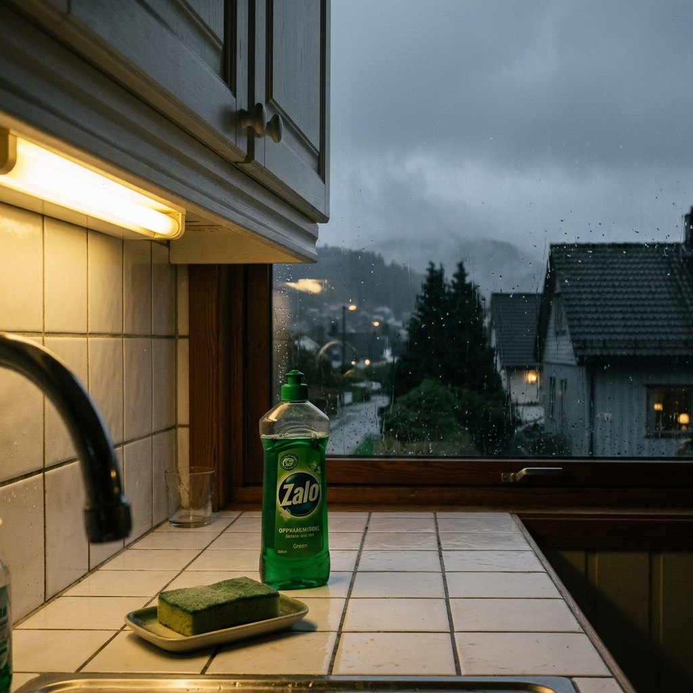
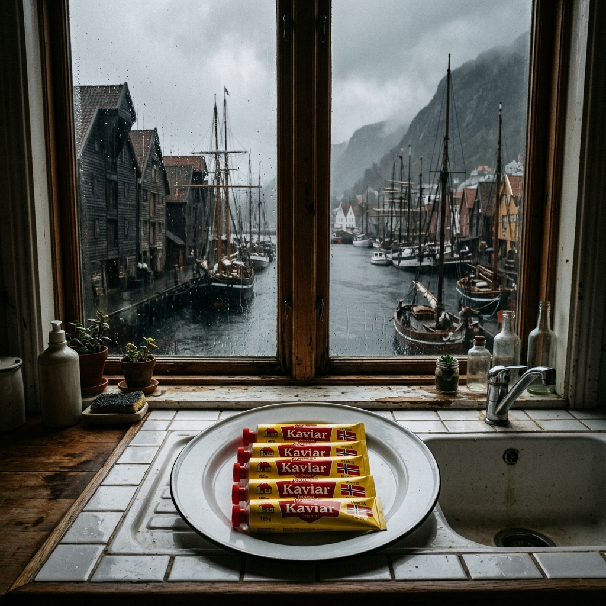
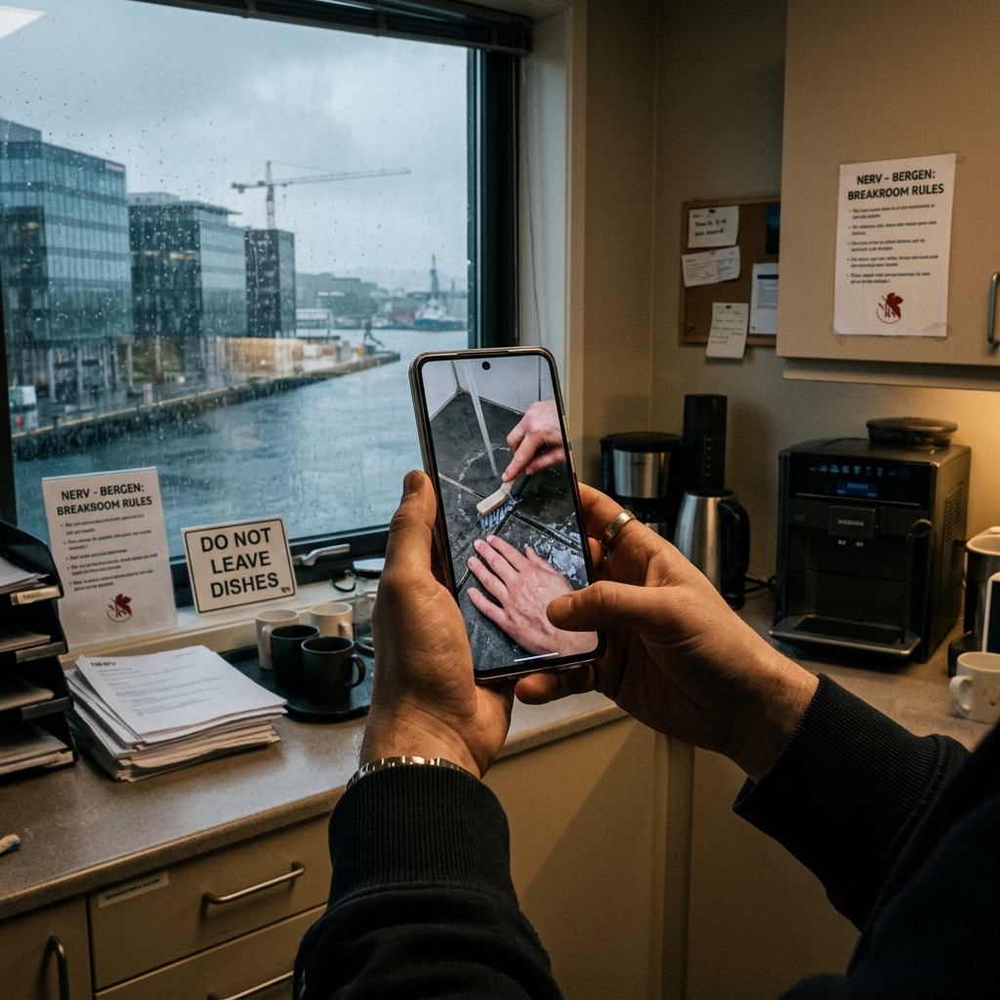
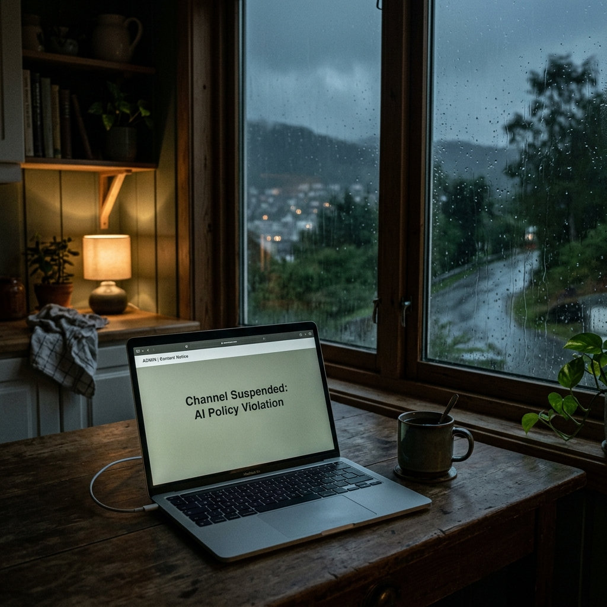

Act I — Kjedsomhetens Filosofi (The Philosophy of Boredom)

It is raining in Bergen.
This is not a scene-setting observation. It is a fact about Bergen, which has 240-plus days of measurable precipitation per year and which has constructed, around this fact, an entire civic identity. The rain is not pathetic fallacy. The rain is Bergen's version of gravity — it acts on everything, always, and is worth mentioning only in its brief absences. Hallvard Nygaard has not mentioned the rain since roughly 2006, when he stopped. He was twenty. He understood.
Hallvard Nygaard is 39 years old and is the administrasjonskoordinator at NERV — the Nordic Environmental Research Vestland — which occupies the sixth floor of a glass building near Marineholmen, where the harbor view would be spectacular if the glass weren't perpetually filmed with drizzle. His title means: he is the person who knows the budget line items, the cleaning rota, the badge-system password, where the backup projector cable lives (bottom drawer of the AV cabinet, left side, not right), and who has conference room B booked on Thursday morning. (It is Ingvild Rasmussen, for a project meeting that will run 22 minutes over. Hallvard blocks the extra 22 minutes preemptively. He has worked here since 2014.)
You will have noticed, already, that we have not told you what NERV studies. We are not going to.
The research happens. It is thorough. It involves the environment and Vestland and something Nordic. There is a laminated card in the lobby that says, in slightly smaller letters than you'd expect for a thing this important, what the institute's current mandate is. In five years, no one has read it beyond the first sentence. Hallvard typed the first sentence of the card. He is not sure he finished reading it even then. This is not a criticism of the research. The research is fine. Greit nok [fine, whatever, good enough, the sound a Bergen person makes when they are declining to engage further but are not hostile about it]. Hallvard has found that most things, assessed honestly, are greit nok. This is not a failure of imagination. It is a philosophy.
Lars Svendsen, the Norwegian philosopher, wrote a book called A Philosophy of Boredom. Hallvard bought it at Norli Galleriet in 2024, on a Tuesday in March, while waiting for the rain to thin enough to make the walk to the Bybanen comfortable. He read it in two sittings. He recognized himself on page forty-four, in a sentence about the modern, post-religious condition of a person whose competence outruns their inner stakes. He read the sentence three times. He felt, briefly, not alone. He did not tell anyone, because what would he say? I have identified my malaise? He is not the sort of person who says that. He went back to NERV, updated the conference room booking system, and ordered toner.
The point about Hallvard's boredom — and this requires precision, or we will tell the wrong story — is that it is not depression. It is not numbness, or despair, or a romantic ennui you can photograph against a window. It is the boredom of a person who is very good at a thing that does not require his full attention. He has thirty-two percent of himself left over. He has always had this surplus. He does not know what to do with thirty-two percent.
He counts things. The number of steps from his front door in Åsane to the Bybanen stop: 74. The number of ceiling panels in conference room A: 48. The number of rain days so far this year, in late September, which is when the story begins: 168.
Åsane is the northern suburb of Bergen, and it is mostly a roundabout and an IKEA, which is more or less true of every suburb, but Åsane achieves this with special commitment. Hallvard lives in a detached row-house unit there, which he bought after Marit moved out in 2021. They had lived there together. After she left, he stayed. This is not a story about Marit. She and Hallvard send each other a birthday SMS each year. Hers is in April; he is reliably three days late. She is reliably gracious about it. They are fine. Greit nok.
The front yard is small. Partly gravel. A green plastic chair sits in the corner near the hedge, where it has sat since Hallvard put it there in 2022 to have a place to sit outside, which he has done approximately once. The view is his neighbor's hedge and, above it, a corner of grey sky. You cannot see any fjords from here. The fjords are elsewhere, being photographed by tourists. Hallvard's view is beige and grey and the hedge, which is Hallvard's view, and he is used to it.
Inside: a kitchen with a north-facing window and a fluorescent under-cabinet strip light that Hallvard finds aesthetically disagreeable and has never changed, because the thing is, it works. The light is a cold 4000K, slightly yellow, the color of a waiting room in a dream. Beside it, a pothos plant in a green plastic pot. The plant is named Berit. Hallvard named her in a moment of what he later identified, neutrally, as anthropomorphism. She survives on neglect. He waters her Sundays.
In the bathroom: tiles. White tiles, six by eight, and between them: grout. Between the third and fourth tile from the floor, along the left wall: a strip of grout that has been, since approximately the previous spring, going black. Hallvard had tried Jif. He had tried bleach, which did nothing except smell strongly of bleach. He had tried a general mold-and-mildew spray from Obs! whose label depicted a gleaming bathroom and a smiling bacterium and which did not work. He had, this past summer, tried Zalo — the green Norwegian dish soap, the one in the familiar bottle, the one you can get for 28 kroner at any Kiwi — applied to a soft sponge, worked into the grout in small circles, left to sit for five minutes in the warmth of a bath that had just run. He had rinsed it. The grout came clean. Not perfect. But clean enough. Greit nok.
He had filmed it on his phone, propped on the edge of the soap dish, pointing down at his hands. He did this to send to no one in particular. He did it the way you write a thing down to remember it: not for an audience, but to have a record that it happened.
Monday morning at NERV. September. The autumn cycle has just begun.
Hallvard walks through the glass entrance at 08:28 and greets Mona, the cleaner, who is pushing a cart past the lobby toward the elevator. Her name is Mona. He does not know her last name. She does not know his either, or if she does, she does not use it, and neither does he. They have greeted each other by first name every working morning since 2014. Eleven years of good morning, Mona / good morning, Hallvard, which is more consistent than almost any other relationship Hallvard has, and he has never thought about this until just now, and now he will not think about it again for several weeks.
He takes the elevator to the sixth floor. He makes coffee. The coffee machine is a Siemens EQ.9 that was purchased in 2022 to replace the previous machine, a Jura that the entire staff mourned for approximately four months. The previous machine has become, among the senior researchers, a symbol of institutional loss. Hallvard maintained both machines' service contracts and has no strong feelings about either.
He opens the budget spreadsheet. There are forty-seven line items in the operating budget. He reviews them in order. Line items 1–12 are unchanged. Line item 13 is slightly over (consumables — the lab benches have been going through gloves at an unusual rate; Hallvard has sent an email). Line items 14–47 are fine. He sends three emails. He books conference room A for a project coordination meeting on November 4th. He processes two purchase orders for research equipment that he could not describe and does not try to. The morning passes.
Aksel from communications comes by at eleven to ask about the promotional photo budget for the annual report. Aksel is thirty-one and uses the word synergy without apparent irony, which Hallvard has decided to take as a form of courage. They discuss the budget. It is fine. Hallvard approves 4,200 kroner for photography and notes that last year they came in at 3,900, so there is buffer. Aksel thanks him and leaves. Hallvard notes, in a way that is not unaffectionate, that Aksel has the specific energy of a person who believes the work he is doing is important and who will, in several years, revise that assessment. This will not harm Aksel. He will be fine. Greit nok.
Lunch is at 11:30. It is always at 11:30. Bergen lunches early; this is a fact; do not argue with it.
The Bybanen home at 16:13. Rain on the window — or rather: the window is wet, which in Bergen is the window's default state; calling it rain would be like calling the sky blue and expecting someone to be interested. Hallvard sits by the window. His reflection looks at him. He counts the stops: Byparken, Nonneseter, Møllendal, Fantoft, Paradis. Eleven stops from the NERV-adjacent stop to the Bybanen station nearest to Åsane. He knows the stops.
He thinks about the grout.
This is the thought: he had solved a problem. The grout had been solved. The mold was gone. And he had, for a reason he had not examined, filmed the solving. He had watched the clip back three times on his phone — hands, sponge, grout, the slight foam of the Zalo working — and he had felt something. Not much. Not a transformation. A small, clean yes.
He does not know yet that this is the beginning of anything.
He exits at Åsane. 74 steps to his front door. He counts them anyway.
The Kiwi near Åsane Senter has the specific fluorescent light that Hallvard associates with the truth. Not insight — the truth. The strip lights run in parallel above the produce section and hum slightly and cast everything in a blue-white that makes all food look faintly post-mortem and correct. The broccoli is broccoli. The carrots are carrots. Nothing is performing anything.
He goes on Saturday, as he always does. He buys what he needs: pasta, smoked salmon, eggs, a block of Jarlsberg, two liters of Tine semi-skim, and a bottle of Zalo. He is on his third bottle since the summer. He thinks about this for a moment — three bottles — and then continues down the aisle. He pays at the self-checkout. The teenage cashier on the monitored register is looking at her phone. She is having a fine time. Greit nok.
He does not yet know why he picked up the Zalo. He will, in approximately four days, understand that his hands already knew.
Sunday. It is October, and mid-October in Bergen is the rain beginning its commitment. This is not the spring drizzle or the summer interruptions; this is the autumn rain settling in for the long term, like a houseguest who has stopped pretending they are going to leave. Hallvard is 168 days into his mental rain-count. Today is day 169.
He has, on his laptop, a suite of AI tools he purchased in spring 2025 for a NERV annual report cover. The director, Solveig Tveit, looked at the result — a composite of environmental imagery and an abstract Vestland map, generated by a tool called NordicCanvas — and said, a bit too much, Hallvard, with a smile that meant: I am not interested but I appreciate the effort. He had kept the tools. The subscription renews monthly. The interface is clean and has a sidebar with preset styles and a text prompt field and an export button. He had not opened it since June.
He opens it now. He doesn't know why. He opens it and lets it sit, loading, while he goes to the bathroom.
The grout. Third tile from the floor. Still clean — cleaner than it has been since he moved in. He looks at it. He thinks about the clip on his phone. Then he goes back to the kitchen and picks up his phone and props it against the Zalo bottle — the current one, green, slightly tacky at the shoulders where a former bottle leaked — and frames the shot so that only his hands are visible. Long-fingered, slightly chapped from the turn of the season. His hands. They have always been there; he has never paid them particular attention. He looks at them through the phone screen.
They are interesting. From this angle — counter-height, looking down — they are just hands doing a thing, and this is, somehow, more interesting than his hands have ever been before.
He presses record.
He cleans the grout again. He doesn't need to; it is already clean. But the motion is right, the Zalo foaming into the sponge, the small circular pressure, the wait. He watches his hands do this. At 22:14 on a Sunday in mid-October, in a kitchen in Åsane that smells of dish soap and the beginning of rain, Hallvard Nygaard films his own hands cleaning tile grout, and the camera doesn't see his face, and the AI tool is still open on his laptop, loading, waiting for instructions.
Greit nok.
He watches the clip back.
He watches it again.
He opens NordicCanvas. He types: Norse longhouse interior, evening light, warm, aged wood, fire in background, slightly wrong, as if from an illustrated children's book that was never published. He presses Generate. The tool runs for forty-three seconds. It returns a background that is a longhouse with the wrong number of beams.
He looks at it. He looks at the clip. He opens the compositing tool. He spends an hour he will not quite account for later doing something he had not planned on doing.
He does not post it. Not yet.
But it exists.
Greit nok.
Act II — Hendane Vaknar (The Hands Awaken)

The first video posted on a Sunday in late October at 22:31, after Hallvard had spent the better part of three evenings compositing, rendering, and second-guessing. It was 47 seconds long. It showed hands — his hands, though no one would know that — working Zalo into bathroom grout with a soft sponge. In the background, instead of his actual bathroom (north-facing, slightly mildewed around the window seal, the mirror with a water-stain he had never fixed), there was a Norse longhouse interior in evening light, warm and slightly wrong, as if an illustrator had been asked to paint something authentically historical and had worked entirely from vibes.
The text overlay, in Bergensk: Mugg på fugene? Prøv dette. [Mold on the grout? Try this — but in the Bergen way, which suggests you should already know this, and if you don't, well, now you do, and we are done.]
The caption: Tips frå Åsane til verda. [Tips from Åsane to the world — offered with the specific irony of a person who knows Åsane is not the world but suspects, privately, that it could be.]
He closed the app and put his phone face-down on the kitchen counter and went to bed. He did not sleep well, but not for the usual reasons. It was a different kind of not-sleeping.
By the following Sunday: 612 followers. Jøss! [Wow, but smaller and wetter — the Bergen version of astonishment, which is not astonishment so much as a mild upward revision.]
He had not expected this. He had not, he realized, expected anything, which was its own revelation: he had posted without a theory of outcome, which was not how Hallvard operated anywhere else in his life. He managed things. He tracked things. He had a spreadsheet for his grocery budget, a spreadsheet for NERV's budget, a spreadsheet for the number of books he'd read each year since 2015 (down from 22 in 2015 to 7 in 2024, a trend line he reviewed annually and felt mildly about). The channel was, initially, the one thing with no spreadsheet.
He made a spreadsheet on day 8.
Sheet 1: Weekly follower count. Sheet 2: View count by video. Sheet 3: Comments by sentiment category (positive / curious / confused / Bergen-in-joke landed). He added new rows each Sunday morning, before filming. He found the process satisfying in the way he found NERV's operating budget satisfying: it was a map of something real.
The map, over the following weeks, began to look interesting.
The second video: drawer organizer. He pulled out the junk drawer — every kitchen has one; Bergen kitchens perhaps more than most, having accumulated their junk through a specific civic attachment to keeping things that might be useful — and arranged its contents on the counter. A rubber band. Three dead batteries (AA). A cork from a wine bottle circa god knows when. A key to something. A pen that worked. A pen that didn't. A tube of Superlim [super glue, a Norwegian national object, not as famous as the kaviar but present in every home] that had fused shut.
He arranged these into a composition. He filmed his hands placing each item. The background: a Norse god's hall, Valhalla-adjacent but domesticated, as if Odin had recently cleared his own junk drawer and this was the aftermath. He spent eleven minutes finding the right NordicCanvas preset. He rejected heroic-mead-hall (too much), viking-domestic-interior (too earnest), and settled finally on Norse-hall-evening-cozy-imperfect, which gave a background with furred torchlight and the suggestion of shields that might have been kitchen implements.
The video ran 52 seconds. It got 8,400 views in four days. Bergen commented: My drawer is exactly this. Wait, how did you get into my kitchen. SAME BATTERIES, THE SAME BATTERIES, THEY ARE NEVER AA WHEN YOU NEED THEM.
The comments were in Bergensk, mostly. But the algorithm was not interested in geography. By the time the third video posted, the recommender had begun surfacing Hendane to Bergen-tagged users, then to a wider Norwegian audience, then — in small but measurable quantities — to viewers in Denmark, Sweden, and, inexplicably, a cluster in the Philippines that seemed to find the Norse backgrounds specifically compelling.
Hallvard tracked this on Sheet 4.
The AI tools required learning. This is load-bearing; the Compositional impulse here wants to summarize, but the tools were labour, and the labour was part of the work, and the work was real.
NordicCanvas was the background generator. It ran on a subscription Hallvard was paying 349 kroner per month for, and it had a prompt field and a style browser and a parameter called authenticity (set to 0 for pure invention, 10 for something approximating historical reference) that Hallvard quickly discovered worked best around 3: genuine enough to feel rooted, loose enough to be strange. NordicCanvas had a 43-second average render time on his laptop, which meant each background generated while he was compositing something else. He learned to queue.
FjordMask was the hand-anonymizer. It was a newer tool, Norwegian-developed (the interface was in both Bokmål and English, with a toggle, and Hallvard used Bokmål because it was faster), and it did two things: it could mask out the hands from the video entirely, replacing them with a fill color, or it could remap the hands onto a different age-type. The age-type library had eight options: Child, 5–8, Child, 10–12, Young Adult, 20s, Middle Adult, 30–40, Middle Adult, 45–55, Older Adult, 60–70, Elderly, 75+, Regional Hands (this last option produced, when selected, a small menu of what the tool called hand-ethnotypes, which Hallvard found simultaneously useful and unsettling and used only the Nordic Fisher option, which gave a hand that was weathered and blunt-fingered and unmistakably someone who had spent years doing something outdoors).
He composited in a standard editing app he'd bought on sale in 2023. His laptop handled the renders slowly. He upgraded his editing software subscription to the tier with GPU offloading on week 5. This cost him 189 additional kroner per month, which he added to Sheet 5: Monthly production costs.
Sheet 5, by week 10, showed expenses of 1,247 kroner per month. He reviewed this against the AdSense-equivalent revenue the platform was now generating. He added Sheet 6.
You will want to know whether his colleagues recognized him. They did not. Not yet. Not ever, actually, though they came close — but that is Act III's story, and we are still in Act II, where the channel is growing and Bergen is beginning to notice and Hallvard is, in the privacy of his spreadsheets, quietly thrilled.
The video that changed things — or one of the videos; there were several, each one changing things in a slightly different direction — was the Stabburet kaviar installation.
Kaviar, in the Norwegian sense, is not what English-speakers mean by the word. It is a pink-orange paste, made of smoked cod roe, sold in a soft-squeezable tube, produced by Stabburet, and consumed by nearly all Norwegians at breakfast on rye crispbread or brown bread, the tube held over the bread at a slight angle, a practiced squeeze releasing a neat orange-pink bead that spreads with the knife. The tube is a national object. There is no English equivalent — not in the sense of caviar as a luxury product, not in the sense of anything. It is its own thing.
Hallvard had three tubes in his fridge. He had been buying three at a time since 2021 because buying one felt optimistic in a way that made him uneasy.
The idea arrived on a Wednesday between two emails. He was going to arrange the tubes in concentric circles on a white plate, and he was going to film his hands placing them, and the background was going to be something medieval — he had recently discovered, in NordicCanvas's historical-Bergen category, a preset called Black-Death-Bryggen that generated an image of medieval Bergen at the moment of the plague's arrival by sea, very detailed, very grey, the ships in the harbor beautifully rendered in a color palette that managed to be both doom-adjacent and somehow cozy in the way all NordicCanvas outputs were. He was going to use that.
He filmed it on a Saturday. His hands placed three Stabburet tubes on a white dinner plate, positioning them in concentric circles — the large ring first, then the inner ring of two, then a single tube at the center, upright, balanced on its flat bottom. The shot took four takes. The tubes kept falling.
The final take: 34 seconds. The background was Black-Death-Bryggen. His hands were FjordMask's Nordic Fisher variant: blunter, more weathered, the hands of a 60-year-old who had handled many things in weather. The music was the hardanger fiddle loop — a single looping four-bar phrase from a track he'd found on a royalty-free site called NorskLyd that may or may not have cleared all its rights. He did not investigate this too closely.
Caption: Stabburet-installasjon nr. 1. Det finst ingen engelsk omsetjing for dette. [Stabburet Installation No. 1. There is no English translation for this. — and there isn't; the word kaviar does its best but the tube is its own category of object, outside translation.]
6.1 million views. Comment section: extraordinary. Bergen went briefly insane in a lovingly local way: THIS IS WHAT WE ARE. Jeg gråter. [I'm crying — but in the Norwegian way, which is more like I am affected beyond usual Bergen measures.] Min bestemor's hender [My grandmother's hands]. A user called @vestlandskvinne posted a three-minute video response in which she placed her own tubes in concentric circles using her actual old hands and said nothing, just the arrangement, and the fiddle music, because the internet had found the loop by week 7 and it was already a Bergen-meme shorthand.
Hallvard read the comments for an hour and fifteen minutes on a Sunday night while Berit the pothos moved slightly in the draft from the kitchen window.
He added a row to Sheet 2. He went to bed. He did not sleep well, for the good kind of reasons.
Ingen dagar utan tips. [No days without tips — not a boast, more of a structural commitment, like Bergen's ingen dagar utan regn, which is not a complaint but a weather report.]
The tagline arrived around week 6, in the same way the channel had arrived: not as a decision but as a recognition of something already decided. He had been posting three videos a week, Sunday/Tuesday/Thursday, with the regularity of NERV's operating budget cycle, and one Thursday he typed it into the caption field before he even thought about it, and then he left it there, because yes. Ingen dagar utan tips. The channel tagline. The obvious echo. The structural rhyme with ingen dagar utan regn that Bergen noticed immediately, because Bergen is a city that pays attention to its own weather metaphors.
Vestlendingen.no: The tagline is the best thing. It's not a boast, it's not a promise, it's not even a tip — it's a weather pattern. Whoever this is, they understand Bergen.
Whoever this is. He read that and smiled at his phone for a second longer than he intended to.
The rain-gutter video was Act II's peak. He planned it for a week. The gutter along the front edge of his roof had been coming apart at the corner joint since September — a gradual separation, not structural, just the age of the fittings, a thing he had been meaning to deal with and had not dealt with. On a Sunday in late October, he took it apart entirely. He needed a flathead screwdriver, a pair of pliers, a length of gutter sealant tape from Obs! (which he had obtained the previous Saturday, navigating the plumbing aisle under the strip lights that flickered near the refrigeration section, the cold blue-white of a well-run supermarket being one of Bergen's primary aesthetic environments), and both of his hands.
He set his phone on the green plastic garden chair, angled up, and filmed his hands performing the repair. The yard: gravel, hedge, the corner of grey sky that was his usual view. The light: golden hour, which Bergen offers in October for approximately forty minutes before the cloud cover reasserts. He caught it. He shot for twenty-two minutes and extracted a 55-second cut.
FjordMask: Nordic Fisher hands. NordicCanvas: a medieval Bergen scene, a harbor at late afternoon with wooden merchant buildings in the background, the quality of light matching — eerily, accidentally matching — the actual golden hour he'd caught in the yard. He spent forty minutes on the composite and then stopped adjusting because to adjust more would be to ruin it.
He posted it on a Sunday at 22:47.
By Tuesday: 8.3 million views. Bergens Tidende had reached out via the channel's comment section by Wednesday morning — a short, professional comment from an account labeled @bt_kultur: Vi er interesserte i å skrive om Hendane. Kan vi ta kontakt? [We are interested in writing about Hendane. Can we make contact? — with the formal Bokmål that means this is serious and a journalist is involved.]
Hallvard read the comment on the Bybanen, at 08:14 on a Wednesday morning. He was sitting by the window. His reflection was in the glass: a man in a rain jacket, a man with slightly chapped hands in his lap, a man who looked, from the outside, exactly like every other person on the Bybanen at 08:14 on a Wednesday.
He did not respond to the comment.
The Bybanen pulled into his stop. He walked the 74 steps to NERV. He made coffee. He reviewed line items 1 through 47.
Greit nok.
He told Berit that evening. One sentence, addressed to the pothos as he watered it: Du skjønar ikkje kor mange som ser på. [You don't understand how many people are watching.] He put the watering can down. He did not elaborate. Berit did not respond, which was appropriate.
He went to bed thinking about the AI tools: NordicCanvas's render queue, FjordMask's hand-ethnotype menu, the royalty-free fiddle loop he'd been using for six weeks and had not paid for. He made a note to check the licensing. He added the note to Sheet 7: Legal/IP.
The Bybanen, his reflection, his hands in his lap, anonymous. By week 10, the channel had 140,000 followers. He tracked this on Sheet 1. The number was a number, and like all numbers, it was what it was, and what it was was strange and real and his.
Greit nok.
Act III — Bergen Lurer (Bergen Wonders)

Bergen Lurer is what you say when Bergen is paying close attention. Lurer means: wonders, but also suspects, also is curious in a way that involves mild conspiracy, also is watching you and has been watching you for a while and has some notes. Bergen is a city that notices. It is a city of 290,000 people who have all, at some point, run into each other at Fisketorget or on the Fløibanen or at the Kiwi in Åsane Senter, and who have, as a result, developed very good instincts for recognizing familiar things. Bergen was paying close attention to Hendane. Bergen had notes.
The Bergens Tidende feature ran on a Thursday morning in mid-January. Week 13.
The headline: Kven er Hendane? [Who Are the Hands? — but the Bergensk Hendane contains the intimacy of a nickname; it is The Hands, which in Bergen means something specific, something like: a person you know by their work before you know their face.]
The reporter was Linn Hauge, who was 34, who had interviewed twelve Bergensers for the piece, and who was very good at her job. She had interviewed the woman who made the @vestlandskvinne video response. She had interviewed a food anthropologist at UiB who described the kaviar-tube installation as "a Bergen household object elevated to cultural artifact by the specificity of its context — this is regional pride as conceptual art." She had interviewed a TikTok-adjacent content analyst who noted that the AI backgrounds were highly sophisticated, "not mass-market filters but deliberate generative composition — someone who knows these tools and has been using them for a while." She had not interviewed Hallvard Nygaard because she had never heard of him. She had spoken to 31 people while reporting the piece, including two NERV researchers who were fans of the channel. Neither researcher thought to mention Hallvard.
Hallvard read the feature on the Bybanen, on his way to NERV, on a Thursday morning. He read it twice. His face did not change. The Bybanen window was wet. A woman in a yellow rain jacket was reading the same piece on her phone, two seats ahead, and she laughed once, audibly, at a paragraph Hallvard could not see from his angle. He looked at the window. He looked at his hands.
He noted, privately, that the food anthropologist had used the phrase regional pride as conceptual art to describe a video he had made by placing three tubes of kaviar on a plate. He filed this alongside greit nok [good enough, fine, the Bergen shrug that accepts without diminishing] in the category of sentences he would not share with anyone.
The lift at NERV. Second week of December. Nine seconds.
Hallvard was returning from getting water — the Siemens coffee machine on the sixth floor had been behaving oddly and he had been, out of a practical minimalism, bringing a glass from the kitchen rather than trusting the machine — when the elevator doors opened and Solveig Tveit, NERV's director, was already inside, on her phone, thumb-scrolling with the intent focus of a person who has found something they didn't expect to enjoy.
"Have you seen this, Hallvard?" She turned the phone toward him. The screen showed a 47-second video. His bathroom grout. His hands. The wrong-beamed longhouse. The hardanger loop.
He looked at the phone. He looked at his director, who was smiling at the phone with the expression of someone who has discovered a small and pleasant secret about her own city. He said: "The one with the cleaning tips?" His voice was entirely normal. He had no idea how his voice was entirely normal.
"This one's older but — the backgrounds, do you see?" She tilted the phone slightly as if a new angle would help. "Someone's making these by hand. The AI images. The tools you'd need to do this properly — that's not a weekend app. This is craft." She looked back at the phone. The lift doors opened at the sixth floor.
"Interesting," Hallvard said. He stepped out of the lift and walked to his desk and sat down and opened the conference room booking system and stared at it for approximately ninety seconds without booking anything.
Nine seconds. He would later recall those nine seconds as the longest lift ride of his life, which is an exaggeration, but not as large an exaggeration as you might expect.
He added a note to Sheet 7: Solveig watches the channel. Does not recognize me. Condition: stable.
He deleted the note ten minutes later.
Ingvild Rasmussen on a Thursday at lunch, the canteen table by the window where the rain was performing its regular Bergen routine — steady, diagonal, the kind that had been going on since Tuesday and would continue until, roughly, March.
"Tonje — that's my oldest — she tried the mold recipe," Ingvild said. She was eating a Kiwi-brand sandwich from the packet: Brunost and cucumber, the brown-cheese-and-cucumber combination that functions in Norway as a default and a comfort and a small act of cultural continuity. "It worked. Completely. The grout in her bathroom had been like that for two years. Now it's gone."
"Good," Hallvard said. He was eating his own lunch, which was a salad he had assembled that morning from things in his fridge, none of which were particularly interesting. "It's just Zalo and a soft sponge. The key is the warmth — you need the bathroom warm when you do it."
Ingvild looked at him. "How do you know about this?"
A beat. One beat, half a second. "I read the tips. Somewhere online." He returned to his salad. Ingvild nodded and returned to the Brunost.
The dobbeltsynet [the double-sight; the Bergen-specific experience of seeing two incompatible things occupy the same moment, which is different from cognitive dissonance in that it has a slight musical quality, like two chords played at once]. He had it now: his colleague eating her sandwich, talking about his video, his hands holding his fork, the same hands that had cleaned that grout, that had placed those kaviar tubes, that had, in their FjordMask Nordic Fisher rendering, been watched 4.2 million times. She had no idea. He had no idea how she had no idea. The camouflage was not a performance; it was the world doing the work, and Hallvard was just the man who happened to be standing inside it.
Greit nok.
Aksel from communications was, on Vestlendingen.no, a person called vestlandsbygd [something like westcountry village, which is either an affectionate self-description or a mild irony and in Aksel's case was probably both]. Hallvard had deduced this by week 9, by correlating the posting timestamps with the times Aksel was away from his desk at NERV and by recognizing, in the writing style, the specific cadence of a person who used synergy without irony in real life.
Vestlandsbygd's theory, posted in a thread titled Kven er Hendane — teoriar og idear [Who is Hendane — theories and ideas], was: "My best guess is someone who works in academia or admin in Bergen city centre. The products are all from Kiwi and Obs! — city-centre prices, not Åsane or Fana. The knowledge is both very practical and slightly aestheticized — this is not a tradie or a homeowner in the usual sense. This is someone who looks at household objects the way a researcher looks at data: carefully, a bit strangely."
Hallvard read this on a Sunday evening and felt his hands go very still on his phone.
The theory was wrong in every specific (Åsane, not city centre; not academic) and right in every texture (admin, practical, slightly aestheticized). He read it three times. He noted that his hands had gone still and decided this was interesting enough to observe neutrally and then move on from. He opened NordicCanvas. He had a new video to render.
The sleuthing community's Facebook group — Kven er Hendane? — had by mid-January 4,112 members. A woman in Laksevåg had constructed a map, on an actual piece of paper she photographed and shared, of all the Bergen neighborhoods compatible with the visible product brands and approximate kitchen dimensions. Åsane was not on the map. She had, with careful logic, eliminated it: the ceiling height in the bathroom footage was, she calculated, too low for the standard build of post-2010 Åsane row houses. She was measuring from a 47-second video in which the ceiling was not visible.
This is Bergen, Hallvard thought. This is Bergen paying attention with full civic effort. He felt, for the first time, something adjacent to guilt: all these people, working so hard, getting so close, being so loving in their curiosity, and he was here in his Åsane kitchen with a ceiling height slightly outside the range the woman in Laksevåg had calculated, and she was wrong, and she would never know she was wrong.
He added a sub-sheet to his spreadsheet: Sheet 2b, Community theories (status: incorrect).
The Byluft podcast was a Bergen culture program, run by two people named Bjarte and Helena out of, apparently, a room that sounded like it had good acoustics and a tendency to echo. Hallvard had listened to it occasionally over the years — they covered local culture, design, music, the occasional architectural controversy — and had found it pleasant if slightly more invested in Bergen's self-image than was strictly necessary. They ran a two-episode arc on Hendane in December and January.
Episode 1: "What is Hendane?" — an enthusiastic close reading of twelve videos, with a guest appearance by the UiB food anthropologist who explained, at some length, the cultural semiotics of the kaviar tube.
Episode 2: "Who is Hendane?" — a detective-style episode in which Bjarte and Helena went through the community theories in sequence and assessed them. They were kind about all the theories. They concluded that the creator was "someone who loves Bergen in the specific way a person loves something they've never left — which is to say, with the fluency of a person who has absorbed it and now cannot quite distinguish themselves from it."
Hallvard listened to this on the Bybanen, Tuesday morning, rain on the window, between Byparken and Nonneseter. His reflection watched him listen. He held his breath for exactly one stop — the long stretch between Nonneseter and Møllendal, where the rail curves through the university district and the window view is mostly buildings and, on days like this, a rain-smeared version of Bergen doing its Tuesday thing.
He had absorbed Bergen and could not distinguish himself from it.
Eg veit ikkje [I don't know, in the Bergen way that means: I do know but I am declining to confirm this right now], he thought, to no one in particular, to his reflection, to the rain.
The videos were getting stranger. This was not a plan; it was a trajectory.
The stockfish-brine Le Creuset video was week 11's Tuesday video. Seven minutes long — unusually long for the format, but the platform had not penalized longer content for a channel at this follower count, and he had things to show. The video demonstrated, with his FjordMask-aged Nordic Fisher hands, the technique for using stockfish brine — the liquid left from soaking dried stockfish, sharp and oceanic and very much a Bergen-adjacent substance — to clean a Le Creuset cast-iron pot that had developed a mineral residue that standard dish soap could not shift. It worked. He had tested it four times before filming.
The background: Black-Death-Bryggen, the NordicCanvas preset he had used for the kaviar video, but this time with a different parameter setting: population, dialed down to about 40, which produced the preset's medieval harbor scene with only a few figures visible at the docks. He had added, using the compositing tool, a detail that NordicCanvas's base render didn't include: in the mid-background, near the ships, three figures in the posture of people cleaning large vessels. Pots, possibly. Something curved and dark. He had spent two hours on this detail and it was barely visible and he put it in anyway.
The video's caption: Fiskesuppe til Le Creuset. Ingenting går tapt. [Fish soup logic applied to Le Creuset. Nothing is wasted. — but in Bergensk, ingenting går tapt also implies: there is always a use for what remains, which is both a cooking philosophy and a Bergen outlook.]
4.2 million views. The comment threads went somewhere unexpected. A museum curator in Amsterdam left a comment about the Black Death's 1349 arrival in Bergen. A food historian in Glasgow compared the stockfish technique to a medieval cleaning method she had found in a manuscript. Someone in Seattle said, simply: this channel is doing something no one can name and I have watched it six times.
This is Bergen, Hallvard thought. The whole world is watching Bergen clean a pot. He added this to no spreadsheet. Some things did not want numbers.
A Bergen party in late October had featured, at least one guest informed the Kven er Hendane? Facebook group, a Halloween costume consisting of: two rubber gloves painted to approximate human skin tones, worn on both hands, with a small plastic bottle of Zalo attached by string. The person wearing the costume had apparently spent the evening making small circular gestures with their Zalo-equipped hands and had been recognized instantly as Hendane by everyone present.
Someone else had made a knitted pattern: a pair of mittens with the Stabburet kaviar tube picked out in orange and pink yarn on the back of each hand. The pattern was downloadable. It was downloaded 11,400 times.
Hallvard found out about the mittens from Aksel, who mentioned them at the coffee machine on a Wednesday morning. "Have you seen the Hendane mittens?" Aksel asked, with the energy of a person who had been waiting to mention this for several hours. "Someone knitted a Hendane pattern. Mittens with the kaviar tube. It's incredible." He showed Hallvard his phone. The mittens were, indeed, good.
"Cute," Hallvard said. He poured his coffee. He went back to his desk. He added a note to Sheet 2b: Knitted mittens. Pattern downloadable. 11,400 downloads. He stared at the number for a moment.
Then he filed a purchase order for the lab glove replenishment he'd been tracking on line item 13, noted that the rate had returned to normal, and updated the spreadsheet.
He had a video to film on Sunday.
By Act III's close: it was a Tuesday evening, late January. The videos were on a three-per-week schedule he had maintained without interruption. He was at his kitchen counter, cleaning his hands after the washing up, when he thought about the classifier.
He had been thinking about it since the Reddit thread. It had appeared in late December — a post on r/bergen titled Is Hendane AI-generated? that had cited, with the precision of someone who had done some reading, a platform content policy they'd found in the ToS. The thread had not resolved. The top comment: The hands are definitely AI-composited but the techniques look real. Does the ratio matter?
He had run his last three videos through a free classifier-check tool called MediaScore (Bergen-developed, he liked this, though the tool had a 12% error rate its own documentation disclosed) and gotten scores of 0.87, 0.89, and 0.93. He knew, with the technical fluency of a person who had been using generative AI tools for eight months, what these numbers meant. He also knew there was a platform policy in Section 4.3.b. He had read Section 4.3.b in October, for the first time, and then again in January, more carefully.
He dried his hands on the kitchen towel. The counter had a slight shine from the washing-up. The Zalo bottle stood at the sink's edge, half-empty, sticky at the shoulders.
He looked at his hands. His actual hands. Long-fingered, slightly chapped, the fingernails trimmed short because longer nails made the compositing less convincing, a thing he had discovered at week 3 and adjusted for and had not told anyone.
The platform's classifier, he noted, would not care about any of this.
Greit nok, he thought, and went to bed, and the rain went on.
The classifier, running its scheduled batch job on a Tuesday night, scored his most recent video at 0.93.
It had been scoring upward for seven weeks.
Act IV — Bannlyst (Banned / Excommunicated)

The email arrived at 07:14 on a Tuesday morning in the first week of February.
Hallvard was on the Bybanen. He knew it was the Bybanen because there was rain on the window and his reflection was doing the thing it always did, looking back at him with the polite detachment of a person who has been asked to stand in for him and is doing a reasonable job. He read the notification on his phone before the train reached Byparken.
Subject: Content Policy Notice — Your account has been flagged for review.
He clicked through.
Your content has been reviewed by our automated systems and has been found to violate our Terms of Service, specifically Section 4.3.b: Content that is predominantly or substantially generated by artificial intelligence systems without clear disclosure labeling. Your account @hendane has been restricted pending a formal review.
Synthetic media score: 0.91 (composite, last 28 days). Threshold for automated review: 0.70. Threshold for content restriction: 0.85.
You may submit an appeal within 14 days using the form linked below. Appeals are reviewed within 72 hours.
He read it twice. The Bybanen moved through Byparken. A man in a red jacket got off. A woman with a stroller got on. The rain continued to be the rain.
He filed the appeal at 07:47, from the NERV elevator. The appeal form had seven fields:
1. Account username (hendane) 2. Content in dispute (all; he left this blank and then typed see channel) 3. Nature of the appeal (inaccurate classification / content is substantially human-generated) 4. Supporting statement (300-word limit) 5. Supporting evidence (attach files; he attached nothing) 6. Preferred contact method (email) 7. Have you read Section 4.3.b? (checkbox; he checked it)
For field 4, he typed: The channel @hendane uses AI tools to generate backgrounds and in some cases to composite AI-rendered hands over footage of real hands performing real techniques. The techniques themselves are authentic and the products used are real. The source footage is human-recorded. The question of whether "predominantly" should refer to screen-area, compute-time, artistic intent, or viewer-experience is a definitional question the platform has answered in one direction; I am asking it to consider others.
He reread this three times. He deleted the last sentence. He submitted the appeal.
He went to his desk. He opened the operating budget spreadsheet. He reviewed line items 1 through 47. Line item 13 was back within normal range. He sent no emails. He booked conference room B for 11:00 on Thursday, which was Ingvild's regular project meeting. He did this because it was Tuesday and it was his job, and he was very good at his job, and his job was what he was doing right now, and the appeal was in the queue, and there was nothing else to do.
He greeted Mona in the corridor at 09:15. She had her cart. Her back looked like it was hurting, the slight forward lean she got on Tuesdays sometimes. "Morning, Mona." "Morning, Hallvard." They continued in their respective directions.
The appeal was denied 71 hours later. Not 72. 71 hours and 14 minutes, which Hallvard noted because he was a person who noted such things, though the noting served no function and he was aware of this.
The reply:
Thank you for submitting an appeal regarding your account @hendane. Our review team has assessed your appeal and has determined that the content restriction will remain in place. Your content was scored at 0.91 for synthetic media content across a 28-day composite assessment. This score exceeds our threshold for clearly-disclosed AI-generated content, as outlined in Section 4.3.b of our Terms of Service.
Our policy is designed to ensure transparency for users who engage with content. We recognize that many creators use AI tools as part of their creative process; however, when AI generation constitutes the predominant element of content, clear disclosure is required. The content at @hendane did not include such disclosure.
If you believe this decision was made in error, you may escalate to a senior review within 30 days. Please note that senior reviews are subject to the same content policy guidelines and are not an appeal of the policy itself.
For further guidance on AI-disclosure best practices, please visit [link].
Hallvard read the email on his phone in the NERV kitchen on a Friday morning, while the coffee machine went through its grinding cycle. He read Section 4.3.b again on the platform's website. He read the AI-disclosure best practices page. It suggested adding a text overlay to all AI-assisted content reading: "This content contains AI-generated elements." He looked at this suggestion for a long time. He thought about the longhouse with the wrong number of beams, the Black-Death-Bryggen harbor, the Nordic Fisher hands on a white dinner plate, the hardanger fiddle loop. He thought about the word elements.
He did not escalate to senior review.
The coffee machine finished grinding. He poured a cup. He went back to his desk and reviewed line items 1 through 47.
Bergen mourned. This is also data.
The comment threads: Vestlendingen.no had 2,400 comments within 18 hours of the channel's restriction notice appearing. The Kven er Hendane? Facebook group hit 5,800 members that week, driven by people who joined specifically to find out what had happened. BT ran a short follow-up piece: "Hendane er borte: Kva hende med Vestlands beste hender?" [Hendane is Gone: What happened to West Norway's best hands?] A woman called the channel "the most honest thing on the internet" in a comment that received 847 likes. Someone made a video eulogy, a 90-second montage of Hendane clips set to a slow version of the hardanger loop.
Hallvard did not read any of this. He had, as a practical matter, turned off the platform's notifications on his phone in mid-January, because the volume had become distracting during NERV work hours, and the habit had stuck. He found out about the BT piece from Aksel, who mentioned it at the coffee machine on a Thursday morning in a tone that was genuinely sorrowful. "It's gone," Aksel said. "The platform banned it. AI-generated content policy. Which — you know, I'm on the fence about whether that's fair. The techniques were real."
"Shame," Hallvard said. He poured his coffee.
"Did you see the final video? The one with the Le Creuset and the stockfish brine? The Black Death in the background?"
"I saw it."
"Seven minutes long. Best thing they made. The detail in the harbor scene." Aksel shook his head. "Someone really understood what they were doing."
Greit nok [fine, whatever, good enough, the Bergen sound that absorbs things without dismissing them], Hallvard said, internally, to himself, in the kitchen, holding his coffee.
"Greit nok," he said, aloud, to Aksel, with the same inflection. Aksel looked at him. Hallvard realized this might have sounded slightly strange. "For the platform to have rules, I mean. Even if the outcome is disappointing."
Aksel nodded slowly. "Sure. Yeah. Rules are rules." He looked unconvinced by his own agreement. He went back to his desk. Hallvard went back to his desk. Line items 1 through 47. The printer needed toner. He ordered toner.
The empty kitchen. Tuesday to Wednesday, 22:14 to 02:11.
He did not film anything. This is what happened: he did not film anything.
It was a Tuesday evening in mid-February. He had eaten pasta with smoked salmon — the same pasta with smoked salmon he made on Tuesdays because it was fast and required no decisions — and he had washed up and dried his hands and stood at the kitchen counter, and then he had not done the next thing.
The next thing would have been: open the editing software, review the week's video plan, check NordicCanvas's render queue, note the shooting schedule for Sunday. This was Tuesday's 21:00–22:30 block, if it was a channel week, which it had been for sixteen consecutive weeks.
It was not a channel week. There was no channel.
He stood at the counter. The Zalo bottle was at the sink's edge. The fluorescent under-cabinet light was on — cold 4000K, the color of a waiting room, which tonight felt like what it was: a light he had hated and never changed, because the color temperature was right for the camera, and now there was no camera. Berit the pothos was in her corner of the counter, alive, improbably, on neglect.
He stood there until about 22:30, which is when he sat down on the kitchen floor, because the counter-standing had run out of logic and the floor made as much sense. He sat with his back against the cabinet below the sink, his hands in his lap, and looked at the kitchen.
The fridge hummed. The under-cabinet light buzzed slightly, at a frequency he had never consciously registered and was registering now. The rain was on the window, which was Bergen weather for February — a steady, committed rain that was the continuation of the rain that had been going on, in various configurations, since late October.
He grieved.
He was aware, in real time, that he was grieving, which was unusual for him because Hallvard did not typically have real-time access to his own emotional states; he usually understood what he felt approximately one beat after the feeling had happened. But this he knew: he was on his kitchen floor at 22:47, grieving a channel he could not tell anyone about, grieving a thing no one knew was his, grieving 16 weeks of Sunday evenings that had had shape and now did not.
He grieved the rhythm. This was the first thing. Sundays had been organized: shopping Saturday, filming Sunday, posting Sunday night for the Monday scroll. Monday mornings had had a quality of anticipation — the first comments trickling in, the view count in the first hour as a predictor of the week's performance, the specific pleasure of a Bergen commuter encounter with something he had made the night before. All of this was gone, and he had not understood, until it was gone, that the rhythm had been the point as much as the videos.
He grieved the craft-trajectory. This was the second thing, and it was, in some ways, the worst. He had a video planned for the coming Sunday: sour cream tubes — rømme, the Norwegian dairy staple, thick and white in its cylindrical container — arranged in a pattern he'd been thinking about since December, with a hand-swap using the Elderly, 75+ FjordMask option, which he had used once before and found affecting in a way he'd not expected. The background was going to be the NordicCanvas preset Iron-Age-Longhouse-Domestic, which he'd recently discovered rendered the firelight at a warmth he couldn't achieve with any other preset. He had tested it. He had a render queued. He would not make the video. He was grieving the unmade thing as specifically as he was grieving the made ones.
He grieved Bergen's loss. This was the third thing, and the one that surprised him most — that he cared about what Bergen lost, that the comment threads going quiet mattered to him, that the Kven er Hendane? Facebook group losing its reason for existence was something he could feel. He had been, for sixteen weeks, a shared object in Bergen. This is a thing he had not expected to want to be. He had been seen without being seen. The hands were his; the mystery was Bergen's. And now the shared object was gone, and Bergen would find another one, because Bergen always did, but this one had been his.
At 01:30, something shifted.
It shifted the way things shifted on the Bybanen in the morning, when the train came out of the tunnel into daylight and the window stopped being a mirror and became a view. A small mechanical transition, and then: different.
He thought: the platform was right.
He had been not-thinking this since the flag email, keeping it at the edge of his attention the way you keep a cold thing at the edge of your mouth — you know it's there, you know you're going to have to deal with it, you have not yet dealt with it. Now: the platform was right. The synthetic media score was 0.91. He had calculated it himself at 0.87 on the low end. The classifier had done its job. Section 4.3.b existed for reasons — not bad reasons, not reasons Hallvard could fault from the inside of his own production pipeline. The work was real. The work was also predominantly AI-generated. Both were true. The classifier was not wrong to notice the second thing.
He sat with this for a while. It did not dissolve the grief. He had thought it might — that if he accepted the platform's correctness the grief would lose its energy source and expire. It did not. The grief was still there. The grief, it turned out, did not need the ban to be unjust. The grief was just the grief of loss, which is the same whether or not the losing was fair.
He found this genuinely surprising. He was a person who processed NERV's budget spreadsheets — 47 line items, reviewed in order, adjusted as needed, no feeling about the numbers themselves. He had not known until this moment that he was capable of grieving something he had decided, on reflection, was fair.
You can know a thing is fair and still be hurt by it. This is one of the small structural truths of being alive. Hallvard sat on his kitchen floor and learned it at 01:30 on a Wednesday morning, which is, when you think about it, exactly when you would expect Bergen to teach you something.
At 01:47, he stood up. He put the kettle on. He made tea — bergamot, which he usually found too strong but which was the only tea he had that he hadn't accidentally been drinking on autopilot for three years.
He sat at the kitchen table with the tea.
At 02:03, he opened his laptop. He opened the platform in a browser tab. He was still logged into his secondary account — the one he'd created in October for testing, before the channel was live, to check how the videos looked from the outside. The secondary account had no videos, no followers, no particular identity except the username: hendane_avkledd. He had created this account as a precaution, in the abstract, not knowing what he was precautioning against.
Avkledd [Unmasked, stripped, revealed — in Bergensk it carries the lightness of something taken off rather than torn away; it is not exposure, it is disclosure; it is what you do with a coat when you come inside].
He looked at the username for a moment. He did not post anything. He did not type anything into the video upload field. He closed the laptop.
He went to bed at 02:11. He lay in the dark and listened to the rain on the Åsane window. Ingen dagar utan regn [No days without rain — Bergen's structural truth, not a lament, not a boast, just the condition under which everything else happens].
The tagline did not come. He waited for it, in the way you wait for something you know you're not going to hear, and it did not come.
Greit nok, he thought. He turned over. The rain continued.
This is not the kind of story that ends. It is the kind of story that stops — but not yet. Not quite yet.
Act V — Avkledd (Unmasked / Stripped)
On Wednesday morning he went to NERV.
He updated the conference room booking system. He processed a purchase order for research equipment — two items he could not describe and did not try to. He booked a service call for the Siemens coffee machine, which had been producing a faint burnt smell on its second cycle of the day for three weeks and which he had been noting in the equipment log but not yet escalating, and which he now escalated, because it was Wednesday and it was his job and the machine needed servicing.
Mona was in the corridor at 09:15 with her cart. Her back looked better than Tuesday. "Morning, Mona." "Morning, Hallvard." He continued to his desk.
Line items 1 through 47. Everything was fine. Greit nok [fine, whatever, good enough, the Bergen acceptance that is also a form of precision: this thing has been assessed and found to be what it is].
At 11:30 he had lunch with Ingvild. She was eating the Brunost sandwich again. He had a salad. She talked about a project timeline issue she was managing. He listened with the full attention he always gave to Ingvild's project timelines, which was considerable. He booked the extra room time she needed. He updated the building access log.
At 16:00 he walked to the Bybanen. The rain was doing a light diagonal thing, the kind that requires a rain jacket and a baseball cap but not an umbrella, because Bergen people do not own umbrellas in the functional sense; they own the principle of an umbrella and have long since migrated to more practical solutions. He had his jacket. He had his cap. He walked 74 steps to the stop and he got on the train and sat by the window and watched Bergen move past.
He did not count the stops. He had counted the stops 11 times a week for eleven years. He did not count them tonight. He watched the window instead.
He was thinking about disclosure. The platform had asked for disclosure. He had not disclosed. He had been asked to attach a text overlay to his content reading: This content contains AI-generated elements. He had not done this. He thought about why he had not done this, and the honest answer — the one that arrived at the window with the patient arrival of Bergen rain — was: it had not occurred to him that the apparatus was the interesting part. He had thought the tips were the interesting part. The grout, the kaviar tubes, the gutter joint, the Le Creuset pot. The doing of a small thing well against a landscape that was invented. He had not understood, until the classifier named it, that the invention of the landscape was what he had actually been making.
The Bybanen window held his reflection. He looked at it for one stop, two stops, the long stretch through the university district.
He thought: what if I disclosed everything? Not a text overlay. Everything. The tools. The prompts. The production pipeline. The spreadsheets. The front yard. The mold recipe, from the beginning. His face, in passing, as a courtesy — not as the point, just as a detail, the way you include a timestamp in a file for completeness.
He got off at Åsane. 74 steps to his front door. The green plastic chair in the corner of the yard, wearing the February rain.
He did not count the steps, but he made them, which is the same thing.
On Saturday he went to Kiwi.
The fluorescent strip lights were doing their usual thing — cold, humming, slightly blue-white, the color temperature of a room where nothing is performing — and he walked the aisles with the specific focus of a Bergen person who shops with a list and deviates from the list in small, considered ways. He bought pasta, eggs, smoked salmon, a block of Jarlsberg. He bought a new sponge — the oval kind, green, the standard kitchen sponge that every Bergen kitchen has had in some rotation since approximately 1987. He bought a bottle of Zalo. He stood in the cleaning aisle for a moment holding it: green bottle, familiar weight, slightly tacky at the shoulders in the way all Zalo bottles get if you keep them long enough, which Hallvard did.
He bought a tube of Stabburet kaviar. Pink-orange, squeezable, the tube that is not caviar in any sense an English-speaker would recognize, that has no translation, that is a distinct category of object that exists entirely in its own terms. He put it in the basket.
He paid at the self-checkout. The teenage cashier on the monitored register was reading something on her phone. She did not look up when he smiled at her. She was at the end of her shift. She was fine.
He walked home. 74 steps in the rain.
Sunday. Late February. The days were, measurably, longer than they had been in the first week of February — a matter of minutes, the angle of the grey light slightly different in the morning, the dark arriving at 17:12 instead of 16:48. Bergen in February is not winter's end; it is the first indication that winter has noted the possibility of an end and filed it for consideration. The rain was the same rain, but the light behind it had changed by a few lumens.
He set up the camera.
He set it on the tripod — the cookbook-stack tripod he'd used from the beginning, three cookbooks he hadn't cooked from in two years, the phone balanced on the top one at the angle he'd calibrated in October. He set it up in his kitchen, pointing at the counter. He did not open NordicCanvas. He did not open FjordMask. He opened the basic editing app, the one he'd used before the channel required a more sophisticated pipeline, and he checked that it was recording and that the audio was on.
He looked at the camera. His face was in frame. Partly — his chin and jaw and the lower half of his nose, the way you are in frame when you are adjusting a camera and have not yet stepped back. He did not step back entirely. He left his face in frame: chin, jaw, a suggestion of the rest, enough that you would know, if you were paying attention, that this was a person. A specific person. A Bergen person, 39, in a kitchen in Åsane, with his hands on the counter.
He pressed record.
"Greit nok," he said, to the camera, to the kitchen, to Berit the pothos in her corner of the counter, alive against all probability, still slightly waxy and green.
He then said, in Bergensk with an English text overlay he had typed and positioned the evening before:
"This is what I was doing."
The video: 18 minutes and 43 seconds. Hallvard on screen, face partially visible throughout, hands fully visible throughout. No AI compositing. The kitchen is the actual kitchen — north-facing window, the fluorescent under-cabinet strip at 4000K, the slight dripping sound from the tap he kept meaning to fix, the Zalo bottle at the sink's edge. Behind him, on the windowsill: Berit.
He narrated the production pipeline. He showed the laptop. He opened NordicCanvas and demonstrated the Norse-hall-evening-cozy-imperfect preset, selecting it, showing the parameter controls, typing a prompt: medieval Bergen harbor, overcast, three figures at dockside, cleaning vessels, slight drizzle, warm-cold contrast, light as if witnessed not staged. He pressed Generate. He let the camera watch the 43-second render time. The background appeared. He looked at it. He said, in Bergensk, with the English text overlay: "This one took me four tries to get right. The light kept being too heroic."
He opened FjordMask and showed the hand-type menu: Child, 5–8, Child, 10–12, Young Adult, 20s, Middle Adult, 30–40, Middle Adult, 45–55, Older Adult, 60–70, Elderly, 75+, Regional Hands / Nordic Fisher. He selected Nordic Fisher and showed what it did to his hands on screen — the real-time preview showing his long-fingered, slightly-chapped Bergen hands becoming the blunter, more weathered hands of a 60-year-old who had spent years doing something outdoors. He watched the preview for a moment. He said, in Bergensk: "These are also hands."
He showed the spreadsheet. All seven sheets. He scrolled slowly through Sheet 1 (follower count, week by week, from 0 to 480,000) and Sheet 2 (views by video, the kaviar installation's 6.1M, the rain-gutter video's 8.3M, the Le Creuset stockfish video's 4.2M, the founding grout video's 3.0M). He showed Sheet 5 (production costs, peaking at 1,247 kr/month). He showed Sheet 2b (Community theories — status: incorrect), in which the Laksevåg woman's ceiling-height map appeared, and the vestlandsbygd academic-or-admin theory, and three others. He did not say anything about Sheet 2b except: "Bergen was paying attention."
He walked, camera in hand, to the front yard.
The yard: gravel, the green plastic chair, the neighbor's hedge, the corner of grey sky that was his view. The camera showed all of this. He showed the position where he had set up for the rain-gutter video, the angle of the late-October golden-hour light that had caught the gutter fitting at exactly the warmth that NordicCanvas's medieval harbor happened to match. He said: "The yard is not dramatic. The AI made it dramatic. The yard is this."
He walked back inside.
He went to the bathroom. Third tile from the floor, left wall: the grout. 21 weeks since the cleaning. Still mostly clean — the cleaning had held, mostly — but along the edges of the grout line, a thin new dark trace was beginning. Not yet mold. The beginning of mold. The grout, 21 weeks later, still slightly black in the way that things are slightly black when you have cleaned them and they have sat in a bathroom in Bergen in winter and are beginning again.
He filmed this for eight seconds, in silence. Just the grout. Just the eight seconds of it being what it was.
He came back to the kitchen counter and he showed the Zalo bottle. Half-empty. Slightly sticky at the shoulders. He held it up and said, in Bergensk, with the English overlay:
"This is where it started. The ratio is: one part Zalo to four parts warm water. Soft sponge. Small circles. Five minutes. The bathroom needs to be warm. You need to have just run a bath. The warmth matters. Rinse thoroughly."
He set the bottle down.
He said: "The techniques are real. I tested everything I showed you. The products are from Kiwi and Obs! and Bunnpris. The backgrounds are from NordicCanvas. The hands are sometimes mine and sometimes the Nordic Fisher option in FjordMask. The music was a royalty-free hardanger loop from a site called NorskLyd — I have since checked the licensing and it is fine."
He paused for a moment. He looked at his hands on the counter. His hands. Long-fingered, slightly chapped from February, the fingernails trimmed short, the same hands they'd always been.
"Hendane," he said. "The hands."
He stopped recording at 18:43. He sat at the kitchen table with the tea that had gone cold. He looked at Berit. Berit was, as always, not particularly interested. She was a pothos. She had things to do.
He dragged the file to the upload field on hendane_avkledd.
The title: Hendane: Avkledd — Kva det var, og korleis vi laga det. [Hendane: Unmasked — What It Was, and How We Made It. The we is him alone, in a Bergen kitchen; the we is Bergensk for I, when the I is being modest about something it is privately proud of.]
The description field: Ingen dagar utan tips. [No days without tips.]
He pressed publish.
The upload bar appeared. 0%.
Outside: rain on the Åsane window, the particular February rain that is not winter ending but is the beginning of the beginning of the end of winter, a distinction Bergen makes with the precision of a city that has had 240-plus years of practice. The strip light under the cabinet hummed. Berit sat on the windowsill.
23%.
He thought about Monday. At NERV: line items 1 through 47. The conference room booking system. The printer toner he had ordered on Wednesday, which should have arrived by now — he checked his email; it had shipped, scheduled delivery Thursday. The Siemens service call was booked for Tuesday. Mona's cart in the corridor. Ingvild's project timeline. Aksel's promotional photography budget, which he had approved for 4,200 kroner and which would come in under that, he predicted, because Aksel was careful with photography budgets whatever else he was not careful with.
But.
There was a new spreadsheet open on his laptop. Sheet 1, column A: Date. Column B: Avkledd views. The header row was there. The cells below it were empty. It would not, he thought, stay empty long.
The upload bar.
67%.
He put his hands on the keyboard. His actual hands. No FjordMask, no Nordic Fisher, no composite, no composite-of-a-composite — just his hands, long-fingered, slightly chapped, the fingernails trimmed short from a habit that had outlasted the channel that formed it.
The rain at the window.
Ingen dagar utan regn. [No days without rain.]
Greit nok.